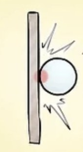
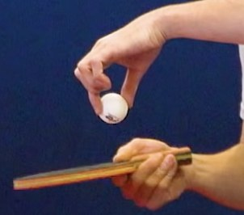
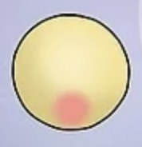
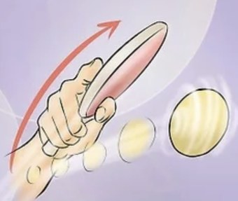
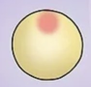
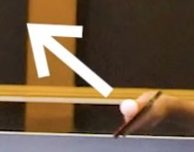
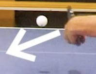

Niveau 5e
Tes activités de 5e !
Retrouvez ici toutes les activités physiques travaillées en 5e. Cliquez sur une activité pour dérouler ses ressources.

1. 🤾 Handball
⭐ L'essentiel en 3 points
- Ton objectifPasser de la défense individuelle à la défense de zone, et en attaque faire des choix rapides : garder / avancer, ou fixer / passer.
- Comment tu es évaluéEn match, sur ton jeu en attaque, en défense, sur ton co-arbitrage et sur ton fair-play (gérer tes émotions, même dans la défaite).
- La clé pour progresserCommunique avec tes partenaires pour glisser d'une zone à l'autre, et reviens systématiquement en zone dès que ton équipe perd le ballon.
✅ Acquisitions prioritaires
Le joueur en défense
- Comprendre et occuper une zone du terrain plutôt que suivre un adversaire désigné : la défense de zone.
- Revenir systématiquement en zone après une perte de balle (repli défensif), en regardant le ballon pour s'orienter.
- Communiquer avec ses partenaires pour glisser d'une zone à l'autre selon les déplacements adverses.
- Être capable, ponctuellement, de presser un porteur de balle tout en gardant son équipe organisée.
Le joueur en attaque
- Porteur du ballon (PB) : faire des choix rapides et pertinents (garder/avancer ou fixer/passer) pour construire une attaque plutôt que forcer un tir individuel.
- Porteur du ballon (PB) : après une passe, re-proposer immédiatement une nouvelle solution pour continuer à faire progresser son équipe.
- Non-porteur du ballon (NPB) : se déplacer utilement pour créer un espace dans la défense de zone adverse et permettre d'aller au tir favorablement.
- Non-porteur du ballon (NPB) : être réactif et ne pas gêner le porteur de balle.
Le co-arbitre
Co-arbitrer une rencontre en connaissant et en faisant appliquer le règlement (voir l'onglet « Règlement »), en s'affirmant dans ses décisions.
Le joueur fair-play
- Gérer ses émotions tout au long du match, y compris dans les moments de tension ou après une défaite.
- Garder une attitude stable et respectueuse envers ses partenaires, ses adversaires et les co-arbitres.
📖 Lexique
- Défense de zone
- Organisation défensive où chaque joueur occupe et défend un secteur du terrain plutôt qu'un adversaire désigné.
- Glisser
- Se déplacer d'une zone défensive à une autre pour suivre le ballon, en communiquant avec ses partenaires.
- Presseur
- Défenseur qui vient ponctuellement gêner le porteur de balle sans quitter l'organisation collective.
- PB / NPB
- Porteur du Ballon / Non-Porteur du Ballon.
- Co-arbitrage
- Arbitrage assuré à tour de rôle par les élèves eux-mêmes.
- Attaque construite
- Attaque organisée par des choix collectifs (passes, démarquages) plutôt que par des tentatives individuelles.
Le savais-tu ?
L'équipe de France masculine, surnommée « les Experts », est l'une des nations les plus titrées de l'histoire du handball mondial.
🏳️ Règlement
🎬 Regarde la vidéo, puis relis les points essentiels juste en dessous. Tout ce qu'il faut retenir est écrit dans le texte : si tu n'as pas envie de regarder la vidéo, le texte suffit.
▶️ La vidéo se lit directement ici : tu n'as pas besoin d'aller sur YouTube.
♻️ Ce que tu connais déjà (rappel de la 6e)
- 3 pas maximum avec le ballon en main, puis il faut dribbler, passer ou tirer.
- Une fois le dribble arrêté, pas de reprise de dribble.
- La zone des 6 m est réservée au gardien.
- Aucun contact : ni tirer le maillot, ni ceinturer, ni pousser, ni frapper le bras du tireur.
🤾 Les gestes techniques de base
- La passe à bras cassé : le coude passe au-dessus de l'épaule, le pied opposé au bras lanceur est devant, et je finis mon geste vers ma cible.
- La passe à rebond : je la joue quand un défenseur est sur la trajectoire ; la balle rebondit aux pieds de mon partenaire.
- Le tir en suspension : je saute vers l'avant, je monte le bras pendant le saut et je tire au point le plus haut, avant de retomber.
- Le dribble : la main pousse le ballon vers le sol, je garde la tête levée pour voir le jeu.
- La position défensive : jambes fléchies, bras fléchis, je me place entre mon adversaire et le but.
🚩 Les remises en jeu
- Engagement au centre en début de match et après chaque but.
- Touche avec un pied sur la ligne quand le ballon sort sur le côté.
- Renvoi du gardien quand le ballon sort derrière ou entre dans la zone.
🟨 Les sanctions
- Jet franc : on rejoue à l'endroit de la faute, les défenseurs se placent à 3 m.
- Jet de 7 m (penalty) : quand une faute empêche une occasion de but évidente.
- Avertissement (carton jaune) pour une faute répétée ou antisportive, puis 2 minutes d'exclusion, puis disqualification (carton rouge) si cela recommence.
🏫 Au collège, on adapte
- On joue en 5 contre 5 : 1 gardien + 4 joueurs de champ.
- Le porteur de balle a 5 secondes pour faire sa passe.
- Cette année, on travaille la défense de zone : je surveille un secteur du terrain plutôt qu'un adversaire désigné.
🧮 Auto-évaluation
Pour chaque critère, choisis le niveau de maîtrise qui te correspond le mieux. Tu obtiendras une estimation de ta note sur 20.
📊 Modalités d'évaluation
Grille d'évaluation — Handball 5e
| Rôle à jouer | Critère | Maîtrise insuffisante | Maîtrise fragile | Maîtrise satisfaisante | Très bonne maîtrise |
|---|---|---|---|---|---|
| Le joueur en défense /6 |
Organisation de la défense de zone | L'élève ne participe pas à la défense en zone, reste devant malgré les sollicitations | L'élève revient en zone sans regarder le ballon, il a besoin d'être guidé en permanence et malgré cela, a du mal à trouver ses repères | L'élève revient en zone mais manque de communication pour glisser ou temps de retard mais présent et efficace | L'élève revient toujours en zone ou en presseur et place son équipe en conséquence (communication) |
| 1 pt | 2 pts | 3 pts | 4 pts | ||
| Le joueur en attaque /8 |
PB — Choix : est capable de réaliser une attaque construite | Élève qui ne s'implique pas dans le collectif | Élève qui reste en retrait, manque de réactivité et de rapidité sur les choix de passes ou de dribbles | Élève qui est un bon atout mais qui reste uniquement sur son individualité. Tirs forcés pas toujours en situation favorable | Choix pertinents et rapides et re-propose une solution après sa passe ce qui permet à son équipe d'aller au tir |
| 1 pt | 2 pts | 3 pts | 4 pts | ||
| NPB — Participation à la progression rapide du ballon | Pas de déplacements voire gêne le porteur de balle | Déplacements trop discrets, ne permet pas à son équipe de créer des espaces | Déplacements pertinents mais avec un petit manque de réactivité | L'élève propose des solutions pertinentes pour créer un espace dans la défense de zone pour aller tirer favorablement | |
| 1 pt | 2 pts | 3 pts | 4 pts | ||
| Le co-arbitre /4 |
Maîtrise des règles du jeu et de l'auto-arbitrage | « Le passif ou perturbateur » — Absent du match ou cherche à imposer son autorité et ses décisions | « L'assisté ou l'influençable » — Sa connaissance du règlement est parcellaire et/ou il est influençable (ne s'affirme pas pendant le match) | « L'handballeur » — Connaît et fait appliquer les principales règles | « L'handballeur expert » — Arbitrage des règles précises, fait assurer un climat serein |
| 1 pt | 2 pts | 3 pts | 4 pts | ||
| Le joueur fair-play /2 |
Gestion des émotions | Attitude à revoir, l'élève quitte le match | Attitude trop changeante, gestion des émotions trop compliquée | Attitude correcte malgré quelques remarques pour se remobiliser sur le match | Attitude irréprochable durant le cycle, gestion des émotions parfaites |
| 0,5 pt | 1 pt | 1,5 pt | 2 pts |
🎥 Vidéos de démonstration
Les deux points travaillés cette année : la défense de zone et le tir en suspension.
🧠 Quiz d'entraînement
🎯 Les attendus
Ce document ne fournissait que la grille d'évaluation ; les attendus, acquisitions et règles ci-dessous ont été rédigés à partir des critères de cette grille et de la progression logique depuis le niveau 6e.
À la fin de cette séquence, tu devras être capable de :
En poursuite du travail engagé en 6e sur la défense individuelle, organiser collectivement une défense de zone qui oblige les joueurs à occuper un secteur du terrain plutôt qu'un adversaire désigné, en communiquant pour glisser d'une zone à l'autre. En attaque, faire des choix rapides et pertinents (garder/avancer ou fixer/passer) pour construire une attaque collective, et se rendre disponible pour faire progresser rapidement le ballon. Co-arbitrer une rencontre de manière autonome et gérer ses émotions dans le jeu comme dans la défaite.
| Rôle à jouer | Lien avec le socle commun |
|---|---|
| Le joueur en défense | Coopérer et réaliser des projets (domaine 2) / Pratiquer des APSA et acquérir des techniques spécifiques pour être plus efficace (domaine 1) |
| Le joueur en attaque | Pratiquer des APSA et acquérir des techniques spécifiques pour être plus efficace (domaine 1) |
| Le co-arbitre | Faire preuve de responsabilité, respecter les règles de la vie collective, s'engager et prendre des initiatives (domaine 3) |
| Le joueur fair-play | Maîtriser l'expression de sa sensibilité et de ses opinions, respecter celles des autres (domaine 3) |
2. 🥏 Ultimate
⭐ L'essentiel en 3 points
- Ton objectifMaîtriser le revers ET le coup droit pour faire progresser vite le disque, et te démarquer par des appels et contre-appels.
- Comment tu es évaluéEn match, sur ton attaque, sur ta défense individuelle tenue tout le match (et tout le tournoi), et sur ton auto-arbitrage par le dialogue.
- La clé pour progresserSois immédiatement réactif au turnover : dès que le disque change de camp, tu changes de statut sans temps mort.
✅ Acquisitions prioritaires
Le joueur en attaque
- Élargir sa panoplie de passes : après le revers et le coup droit, apprendre le revers tête pour passer par-dessus un défenseur qui bloque les deux côtés.
- Participer activement à l'attaque en limitant les déchets (passes perdues) ; dépasser la maîtrise basique du seul revers pour utiliser aussi le coup droit.
- Prendre l'information rapidement et transmettre des passes précises dans la course du non-porteur de disque.
- Se démarquer avec mobilité, en réalisant des appels et contre-appels pour sortir du marquage du défenseur.
- S'adapter aux déplacements de ses partenaires et demander le disque dans sa course.
Le joueur en attaque et en défense
- Être très réactif lors de chaque turnover : changer immédiatement de statut (d'attaquant à défenseur, ou l'inverse) sans temps mort.
- Enchaîner sur une contre-attaque dès la récupération du disque : c'est juste après le turnover que la défense adverse est la plus désorganisée.
- Pour que la contre-attaque marche : le receveur part vers l'avant pendant que le nouveau porteur cherche la passe longue, sans attendre que tout le monde soit replacé.
L'équipe en défense
- Organiser et maintenir une défense individuelle sans « trous », de façon permanente sur un match, puis sur un tournoi entier.
- Se replacer vite après avoir perdu le disque, pour ne pas subir à son tour la contre-attaque adverse.
L'auto-arbitre
Auto-arbitrer une rencontre en connaissant et en appliquant les règles principales (voir l'onglet « Règlement »), en privilégiant le dialogue pour contribuer à un climat serein plutôt que d'imposer ses décisions.
📖 Lexique
- Appel / contre-appel
- Un appel, c'est partir dans une direction pour demander le disque. Un contre-appel, c'est repartir aussitôt dans l'autre sens : ton défenseur suit ton premier départ, et ce brusque changement de direction le laisse sur place. Le secret, c'est le changement de rythme : tu ralentis, puis tu relances d'un coup.
- Revers tête
- Une passe lancée au-dessus de la tête, bras au-dessus de l'épaule, le disque presque à plat. Elle sert à passer par-dessus le défenseur quand il bloque à la fois le côté du revers et celui du coup droit. La passe retombe alors derrière lui, dans la course de ton partenaire.
- Contre-attaque
- Attaque lancée tout de suite après avoir récupéré le disque, pendant que l'équipe adverse est encore désorganisée. C'est le moment le plus favorable pour marquer.
- Turnover
- Changement de possession du disque (interception, disque tombé, faute, 10 secondes dépassées).
- Défense individuelle permanente
- Défense sur un adversaire attitré, maintenue sans interruption sur tout un match ou un tournoi.
- Auto-arbitrage
- Arbitrage assuré par les joueurs eux-mêmes, basé sur le dialogue et le respect du règlement.
- Pied de pivot
- Pied qui reste fixe au sol pendant qu'on manie le disque.
Le savais-tu ?
C'est le seul sport collectif où il n'y a pas d'arbitre — ce sont les joueurs eux-mêmes qui signalent les fautes, selon un principe appelé « l'esprit du jeu » (Spirit of the Game).
🏳️ Règlement
🎬 Regarde la vidéo, puis relis les points essentiels juste en dessous. Tout ce qu'il faut retenir est écrit dans le texte : si tu n'as pas envie de regarder la vidéo, le texte suffit.
▶️ La vidéo se lit directement ici : tu n'as pas besoin d'aller sur YouTube.
🥏 Le principe du jeu
- Deux équipes s'affrontent : on marque 1 point en réceptionnant le disque dans la zone d'en-but adverse.
- Le disque progresse uniquement par des passes : le porteur de disque n'a pas le droit de courir.
- Après chaque point, les équipes changent de côté et l'équipe qui a encaissé engage.
⏱️ Quand j'ai le disque
- Je dois garder un pied fixe au sol : c'est le pied de pivot. L'autre pied peut bouger pour me tourner.
- J'ai 10 secondes pour faire ma passe. Mon défenseur les compte à voix haute : c'est le « marquage ».
- Mon défenseur doit rester à 1 m de distance (la largeur d'un disque).
🚫 Le non-contact
- L'ultimate est un sport sans aucun contact : tout contact est une faute.
- Un défenseur n'a pas le droit d'arracher le disque des mains du porteur.
🔄 Le turnover : quand le disque change de camp
- Le disque tombe au sol.
- Le disque sort en dehors du terrain.
- Le porteur dépasse les 10 secondes.
- Un défenseur bâche le disque : il le contre en vol et le fait tomber au sol.
Dans tous les cas, le disque change de camp immédiatement, sur place : il n'y a pas d'arrêt de jeu. Il faut donc changer de statut tout de suite, d'attaquant à défenseur ou l'inverse.
⚖️ L'auto-arbitrage
- Il n'y a pas d'arbitre : ce sont les joueurs eux-mêmes qui signalent leurs fautes.
- En cas de désaccord, on discute calmement. Si personne ne se met d'accord, le disque revient au dernier lanceur.
- Le respect de l'adversaire (l'« esprit du jeu ») fait partie du règlement, au même titre que les autres règles.
🏫 Au collège, en 5e
- Cette année, seule la bâche compte pour récupérer le disque : le défenseur doit contrer le disque en vol et le faire tomber au sol.
- On poursuit l'auto-arbitrage commencé en 6e, en privilégiant le dialogue pour régler les litiges.
- La défense individuelle doit tenir sur tout le match, et pas seulement sur quelques actions.
🧮 Auto-évaluation
Pour chaque critère, choisis le niveau de maîtrise qui te correspond le mieux. Tu obtiendras une estimation de ta note sur 20.
📊 Modalités d'évaluation
Grille d'évaluation — Ultimate 5e
| Rôle à jouer | Critère | Maîtrise insuffisante | Maîtrise fragile | Maîtrise satisfaisante | Très bonne maîtrise |
|---|---|---|---|---|---|
| Le joueur en attaque /9 |
Rôle dans la progression rapide du disque et maîtrise des coups | Le joueur ne participe pas à l'attaque ou trop de déchets | Le joueur se débarrasse systématiquement du disque lorsqu'il en a possession, maîtrise basique des coups (revers principalement) | Bonne prise d'information et maîtrise des coups mais problème d'exécution quelques fois | Très efficace : maîtrise des différentes techniques et passes précises dans la course du NPD |
| 1 pt | 2,5 pts | 4 pts | 5 pts | ||
| Démarquage | Ne participe jamais ou rarement aux contre-attaques, reste statique | Manque de mobilité lorsque le défenseur est au marquage et/ou ne se démarque pas efficacement (est caché par le défenseur) | Mobile, propose des solutions de passe efficace malgré la présence d'un défenseur | Très mobile, est capable de faire des appels/contre appels pour sortir du marquage, s'adapte selon les déplacements de ses partenaires, demande des disques dans la course | |
| 1 pt | 2 pts | 3 pts | 4 pts | ||
| Le joueur en attaque et en défense /5 |
Réactivité lors des turnovers | Temps de réaction trop important mettant en difficulté son équipe | Temps de réaction trop changeant en fonction des équipes | Temps de réaction correct mais qui peut s'améliorer | Très vif lors de tous les turnovers |
| 1 pt | 2,5 pts | 4 pts | 5 pts | ||
| L'équipe en défense /4 |
Organisation et mise en place de la défense individuelle | La défense à trous | L'individuelle à mi-temps | L'individuelle permanente sur un match | L'individuelle permanente sur un tournoi |
| 1 pt | 2 pts | 3 pts | 4 pts | ||
| L'auto-arbitre /2 |
Maîtrise des règles du jeu et de l'auto-arbitrage | Évite le dialogue et tente d'imposer aux autres ses décisions altérant le climat de la rencontre | Sa connaissance du règlement est parcellaire. Les autres joueurs lui rappellent ce qu'il doit faire et/ou fait de l'anti-jeu | Capable d'un auto-arbitrage des règles principales | Capable d'un auto-arbitrage des règles précises, contribue à assurer un climat serein |
| 0,5 pt | 1 pt | 1,5 pt | 2 pts |
🎥 Vidéos de démonstration
La maîtrise des gestes techniques de l'ultimate.
🧠 Quiz d'entraînement
🎯 Les attendus
Ce document ne fournissait que la grille d'évaluation ; les attendus, acquisitions et règles ci-dessous ont été rédigés à partir des critères de cette grille et de la progression logique depuis le niveau 6e.
À la fin de cette séquence, tu devras être capable de :
En poursuite du travail engagé en 6e, maîtriser les techniques de passe (revers, coup droit) pour faire progresser rapidement le disque, et se démarquer efficacement par des appels et contre-appels. Ajouter à la défense individuelle déjà travaillée une exigence de continuité sur tout un match, voire tout un tournoi. Être réactif lors des turnovers en changeant immédiatement de statut (attaque/défense). Poursuivre l'auto-arbitrage en privilégiant le dialogue pour régler les litiges.
| Rôle à jouer | Lien avec le socle commun |
|---|---|
| Le joueur en attaque | Pratiquer des APSA et acquérir des techniques spécifiques pour améliorer son efficacité (domaine 1) |
| Le joueur en attaque et en défense | Coopérer et réaliser des projets (domaine 2) |
| L'équipe en défense | Coopérer et réaliser des projets (domaine 2) |
| L'auto-arbitre | Faire preuve de responsabilité, respecter les règles de la vie collective, s'engager et prendre des initiatives (domaine 3) |
3. 🎯 Biathlon (scolaire)
⭐ L'essentiel en 3 points
- Ton objectifEnchaîner une course d'allure choisie (VMA ou VMA-1) et des lancers de vortex pour réaliser la meilleure performance combinée.
- Comment tu es évalué2 fois : 3 minutes de course + 3 lancers. Un aller n'est validé que si tu arrives au plot pile à la fin des 18''. Les rôles d'échauffé et d'observateur / coach sont aussi notés.
- La clé pour progresserChoisis une allure que tu peux tenir et gère le compromis vitesse / précision : contrôle ta respiration avant de lancer.
✅ Acquisitions prioritaires
L'athlète
- S'engager dans une démarche réflexive individuelle à partir de la prise en compte des leçons réalisées précédemment.
- Définir une stratégie d'épreuve (course + lancers) visant la meilleure performance possible en fonction de ses capacités du jour J.
- Gérer son allure de course afin d'arriver à temps (ni en avance, ni en retard) à son plot de VMA.
- Gérer le compromis vitesse (lors des allers de 18'') / précision (lors des lancers de vortex).
- Ajuster son tir : contrôler sa respiration, maîtrise et stabilité de la concentration.
L'échauffé
- Adapter son échauffement à l'épreuve à réaliser : course (effort intense) + lancers.
- S'organiser pour effectuer un échauffement complet en 12' (articulations, gammes musculaires, étirements activo-dynamiques, accélérations progressives, lancers).
L'observateur / coach
- Maîtriser les rôles d'observateur (remplir la fiche d'observation : course réalisée dans les temps, lancers valides dans la zone) et de coach (gérer l'échauffement de son athlète, être réactif pour ramener les vortex dans la zone de lancer afin que l'athlète puisse enchaîner sans perdre de temps).
- Renseigner son camarade à partir de critères simples (courses restantes, gestion de l'allure, précision des lancers).
- Encourager et motiver son camarade.
📖 Lexique
- VMA
- Vitesse Maximale Aérobie : la vitesse de course la plus rapide à laquelle ton corps arrive encore à apporter à tes muscles tout l'oxygène dont ils ont besoin. C'est elle qui détermine jusqu'à quel plot tu dois aller en 18 secondes.
- VMA-1
- Un cran en dessous de ta VMA. Tu peux choisir cette allure le jour J si tu te sens moins en forme : la course est plus facile à tenir, mais le plot à atteindre est plus proche.
- Plot de VMA
- Repère au sol que l'athlète doit atteindre au bout de chaque 18'' de course, ni en avance, ni en retard.
- Zone de lancer
- Zone choisie par l'athlète pour effectuer ses 3 lancers de vortex après chaque course.
- Épreuve combinée
- Épreuve qui associe plusieurs disciplines (ici course et lancer) dont les performances se cumulent.
- Fiche d'observation
- Document rempli par l'observateur/coach pour valider et noter les performances de son camarade.
🏳️ Règlement
Ce sont les règles que l'observateur/coach doit connaître et faire respecter :
- Avant de courir, l'athlète annonce son choix : courir à sa VMA ou à VMA-1.
- Chaque aller dure 18'' : un aller n'est validé que si l'athlète arrive au plot pile à la fin des 18'', ni en avance, ni en retard.
- À l'issue des 3 minutes de course, l'athlète dispose de 1'30 pour effectuer 3 lancers de vortex dans la zone de lancer de son choix.
- Une récupération de 1'30 est accordée avant d'enchaîner la seconde partie de l'épreuve (nouveau choix de plot, 3' de course, 1'30 de lancers).
🧮 Auto-évaluation
Pour chaque critère, choisis le niveau de maîtrise qui te correspond le mieux. Tu obtiendras une estimation de ta note sur 20.
📊 Modalités d'évaluation
Situation repère
- Les élèves sont évalués sur le rôle d'athlète. L'évaluation consiste à réaliser 2 courses de 3 minutes alternées par 2 sessions de 3 lancers.
- Avant la course, les athlètes doivent indiquer leur choix de courir à leur VMA ou à VMA-1. Ils enchaînent ensuite 3 minutes de course pendant lesquelles ils effectuent des allers (10 courses) de 18'' jusqu'au plot choisi (VMA ou VMA-1). L'objectif est d'arriver au plot à la fin des 18'', ni en avance, ni en retard sinon le passage n'est pas validé.
- À la fin de ces 3 minutes de course, les athlètes ont 1'30 pour effectuer leurs 3 lancers. Le choix de la zone est laissé aux élèves.
- Les athlètes ont ensuite 1'30 de récupération avant d'effectuer la seconde partie de l'évaluation (choix du plot de course – 3' d'allers – 1'30 pour effectuer 3 lancers).
- Les élèves n'étant pas évalués sur le rôle d'athlète sont évalués sur le rôle d'observateur/coach. Leur but est de valider les courses de leurs camarades et les lancers ainsi que de les aider dans leur échauffement et dans leur gestion de course.
- En plus de ces 2 rôles, les élèves seront évalués sur le rôle de l'échauffé (être capable de préparer son corps à une épreuve de biathlon pendant 12').
Grille d'évaluation — Biathlon 5e
| Rôle à jouer | Critère | Maîtrise insuffisante | Maîtrise fragile | Maîtrise satisfaisante | Très bonne maîtrise |
|---|---|---|---|---|---|
| L'athlète /12 |
Nombre de points obtenus /9 |
Moins de 15 pts | Entre 15 et 20 pts | Entre 21 et 23 pts | Plus de 24 pts |
| 2,25 pts | 4,5 pts | 6,75 pts | 9 pts | ||
| Choix et réalisation du projet de course /3 |
L'athlète ne court pas et ne lance pas à sa VMA et zone de lancer de référence | L'athlète fait 2 choix en-deçà de sa VMA et/ou zone de lancer de référence | L'athlète fait 1 choix en-deçà de sa VMA et/ou zone de lancer de référence | Le choix fait par l'athlète pour la course et les lancers correspond à sa VMA et zone de lancer de référence | |
| 0,75 pt | 1,5 pt | 2,25 pts | 3 pts | ||
| L'échauffé /4 |
Qualité et gestion de l'échauffement | Peu de sérieux, l'échauffement est incomplet voire inexistant et trop entrecoupé de moments de pause | Échauffement incomplet ou terminé trop en avance (mauvaise gestion des 8') | L'échauffement est complet mais manque de progressivité dans les étapes réalisées | L'échauffement est complet et progressif. L'athlète est prêt à réaliser son épreuve. |
| 1 pt | 2 pts | 3 pts | 4 pts | ||
| L'observateur/coach /4 |
Remplissage fiche d'observation /2 |
Fiche d'observation pas remplie ou non rendue | Fiche d'observation partiellement remplie | Fiche d'observation remplie avec sérieux mais manque des informations | Fiche d'observation complète : projet de course, observations, total |
| 0,5 pt | 1 pt | 1,5 pt | 2 pts | ||
| Attitude vis-à-vis de son camarade /2 |
Pas concerné par la course de son camarade | Manque de concentration dans l'observation | Encourage et motive son camarade | Encourage et conseille son camarade sur son épreuve | |
| 0,5 pt | 1 pt | 1,5 pt | 2 pts |
🧠 Quiz d'entraînement
🎯 Les attendus
À la fin de cette séquence, tu devras être capable de :
Enchaîner une course de demi-fond gérée à l'allure choisie (VMA ou VMA-1) et des séries de lancers de vortex afin de produire la meilleure performance combinée possible, en gérant le compromis entre vitesse de course et précision de lancer. Observer, valider et conseiller un camarade dans son échauffement et sa performance. Savoir s'échauffer en autonomie pour préparer son corps à une épreuve combinée.
| Rôle à jouer | Lien avec le socle commun |
|---|---|
| L'athlète |
|
| L'échauffé | « S'échauffer avant un effort » |
| L'observateur / coach | « Aider ses camarades et assumer différents rôles sociaux » |
4. 🏸 Badminton (simple, 1/2 terrain)
⭐ L'essentiel en 3 points
- Ton objectifEn simple sur ½ terrain, construire le point pour rompre l'échange en variant tes frappes en longueur et en vitesse.
- Comment tu es évaluéUne montante-descendante avec des matchs de 3'30. Les rôles d'arbitre, d'entraîné et de matériel sont évalués sur toute la séquence.
- La clé pour progresserUtilise ton service comme une arme (court ou long) et crée l'espace libre avant de placer ton amorti ou ton smash.
✅ Acquisitions prioritaires
Le joueur
Jouer avec intentionnalité :
- Utiliser le service comme une arme permettant de mettre en difficulté son adversaire (prendre l'avantage sur le jeu) : services courts/longs.
- Identifier les situations favorables de marque : utilisation du BINGO de manière pertinente.
- Exploiter les espaces libres (ex : je fais un dégagé fond de court pour créer l'espace libre juste derrière le filet et ainsi faire un amorti OU j'envoie un volant fond de terrain pour que mon adversaire me renvoie un volant haut devant le filet et que je smashe).
- Frappes variées en longueur (jeu court/jeu long) et en vitesse (amorti/smash) : je joue pour gagner le point et pas seulement pour renvoyer le volant.
- Position d'attente et replacement : le replacement doit servir à rejouer et pas seulement à revenir au milieu.
L'entraîné
- Produire des trajectoires hautes pour favoriser le maintien de l'échange.
- Répéter un geste pour le stabiliser puis être capable de le réinvestir en situation de match : jeu des 3 zones.
- S'investir dans une routine de travail.
L'arbitre
- Développer un arbitrage prenant en compte les règles suivantes : service, délimitations du terrain, fautes principales.
- Prendre des décisions justifiées.
- Suivre et tenir une feuille de match.
- Compter les points et annoncer le serveur.
Le matériel
- Savoir installer les poteaux et filet puis tendre les filets.
- Plier correctement le filet.
📖 Lexique
- BINGO
- Signal annoncé par le joueur qui repère une situation favorable pour rompre l'échange et marquer le point.
- Rivière
- Ligne de service courte, proche du filet, qui délimite la zone de service.
- Amorti
- Frappe courte qui fait tomber le volant juste après le filet.
- Service court
- Service qui retombe juste derrière la ligne de service court, tout près du filet. Ton adversaire est obligé d'avancer et de jouer le volant vers le haut : il ne peut pas attaquer. C'est le moment de te préparer à smasher son renvoi.
- Service long
- Service qui va au fond du terrain adverse. Ton adversaire est obligé de reculer, ce qui libère tout l'espace devant le filet pour ton amorti au coup suivant.
- Contre-amorti
- La réponse à un amorti adverse : tu es près du filet et tu remets le volant juste de l'autre côté, très court et très bas, au lieu de le relever haut. Bien fait, il oblige l'adversaire à se précipiter vers l'avant et t'évite de lui offrir un volant facile à smasher.
- Dégagé
- Frappe haute et profonde qui envoie le volant au fond du terrain adverse.
- Partenaire en or
- Jeu d'échauffement où l'on cumule des points en maintenant l'échange par des trajectoires hautes.
- Feuille de match
- Document tenu par l'arbitre pour suivre et consigner le déroulement du match.
Le savais-tu ?
Le smash le plus rapide jamais mesuré au badminton est de 565 km/h (Satwiksairaj Rankireddy, 2023) — plus rapide qu'une voiture de Formule 1 !
🏳️ Règlement
🎬 Regarde la vidéo, puis relis les points essentiels juste en dessous. Tout ce qu'il faut retenir est écrit dans le texte : si tu n'as pas envie de regarder la vidéo, le texte suffit.
▶️ La vidéo se lit directement ici : tu n'as pas besoin d'aller sur YouTube.
🏸 Le service
- Je frappe le volant en dessous de ma taille, la tête de raquette dirigée vers le bas.
- Le serveur et le receveur doivent être immobiles, les deux pieds au sol, jusqu'à la frappe.
- Je sers à droite quand mon score est pair, à gauche quand il est impair.
🎯 L'échange
- Le volant ne doit jamais toucher le sol de mon côté.
- Je n'ai droit qu'à une seule frappe : pas de double touche, et je n'ai pas le droit d'« accompagner » (porter) le volant.
- Je n'ai pas le droit de toucher le filet avec ma raquette, mon corps ou mes vêtements.
- Ma raquette peut passer au-dessus du filet seulement dans le prolongement de ma frappe (l'accompagnement du geste).
- Un volant qui touche le filet puis retombe dans le terrain adverse est bon.
📏 Les limites du terrain
- Un volant qui tombe sur la ligne est bon.
- Un volant que je laisse tomber en pensant qu'il est dehors, mais qui touche la ligne, me fait perdre le point.
🔢 Le score
- Un point est marqué à chaque échange, que l'on serve ou non.
- Celui qui gagne l'échange sert au point suivant.
🤝 Le rôle de l'arbitre
- J'annonce le score à voix haute avant chaque service, en commençant par celui du serveur.
- Je surveille la hauteur du service (sous la taille) et les touches de filet.
🏫 Au collège, on joue sur ½ terrain
- Tu joues en simple sur un demi-terrain (dans le sens de la longueur), pas sur le terrain entier.
- Du coup, les couloirs latéraux font partie du terrain : un volant qui tombe dedans est bon.
- Et les services ne sont pas croisés : tu sers droit devant toi, dans le demi-terrain d'en face.
- Tout le reste du règlement ne change pas.
🧮 Auto-évaluation
Pour chaque critère, choisis le niveau de maîtrise qui te correspond le mieux. Tu obtiendras une estimation de ta note sur 20.
📊 Modalités d'évaluation
Situation repère
- 🏸 Le format : une montante-descendante, avec des matchs de 3'30, en simple sur ½ terrain.
- ⬆️ Si tu gagnes, tu montes d'un ½ terrain. ⬇️ Si tu perds, tu descends d'un ½ terrain. La rotation se fait en autonomie, sans que la professeure ait à le dire.
- ⚖️ L'arbitrage : s'il y a un arbitre sur le ½ terrain, c'est le perdant du terrain du dessus qui devient arbitre, et l'arbitre va jouer sur le ½ terrain qu'il vient d'arbitrer.
- 🎯 Pourquoi ce format ? Pour t'obliger à rompre l'échange le plus vite possible, et pour que tout le monde joue le même nombre de matchs.
- 📅 Évalué aussi au fil de la séquence : le rôle d'arbitre et celui d'entraîné (situations d'apprentissage et de réinvestissement) — pas seulement le jour de l'évaluation.
Grille d'évaluation — Le joueur et l'arbitre
| Rôle à jouer | Critère | Maîtrise insuffisante | Maîtrise fragile | Maîtrise satisfaisante | Très bonne maîtrise |
|---|---|---|---|---|---|
| Le joueur /16 |
Profils | « L'inintentionné » | « Le sécuritaire » | « Le technicien » | « Le tacticien » |
| Position d'attente et replacement | Position d'attente et replacement absent (subit l'échange) | – Position d'attente présente mais peu passive (manque de dynamisme) – Replacement effectué mais inefficace |
– Position d'attente active (raquette haute, dynamique) – Replacement régulier permettant de rejouer dans de bonnes conditions |
– Position d'attente dynamique (anticipation) – Replacement rapide et efficace permettant de prendre l'initiative |
|
| 1 pt | 2 pts | 3 pts | 4 pts | ||
| Service | Service pas maîtrisé ou pas règlementaire | Service règlementaire mais sans intention de marquer le point | Arrive à marquer quelques points grâce à son service | Met systématiquement en difficulté son adversaire dès le service | |
| 0,5 pt | 1 pt | 1,5 pt | 2 pts | ||
| Construction du point | Pas d'intentionnalité : renvois centrés ou beaucoup de fautes directes | Cherche aléatoirement à mettre en difficulté son adversaire en utilisant principalement le dégagé et le jeu court/long | Construction simple du point en identifiant les espaces libres, frappes variées mais pas toujours précises | Crée et exploite toutes les situations favorables de marque grâce à l'utilisation de frappes variées en longueur et vitesse (amorti/smash) | |
| 1 pt | 2,5 pts | 4 pts | 5 pts | ||
| Utilisation du BINGO | Annonce un BINGO au hasard ou ne l'utilise jamais (ne repère pas les situations favorables pour marquer le point) | Annonce parfois un BINGO dans des situations favorables mais de manière tardive ou peu pertinente | Repère les situations favorables les plus évidentes (adversaire en retard, volant haut…) et annonce le BINGO | Utilisation du BINGO toujours pertinemment et qui entraîne systématiquement la rupture de l'échange | |
| 1 pt | 2,5 pts | 4 pts | 5 pts | ||
| L'arbitre /3 |
Posture et attitude | N'arbitre pas et/ou ne perturbe ses camarades | Suit le match et compte les points mais hésitant sur certaines règles | Compte les points à haute voix + est capable d'intervenir lorsqu'une règle n'est pas respectée | – Compte et annonce les points ainsi que le serveur à haute voix – Est capable d'expliquer ses décisions et de réguler le match de façon autonome |
| « Le passif ou perturbateur » | « L'hésitant » | « Le badiste » | « L'expert » | ||
| 1 pt | 2 pts | 3 pts | 4 pts |
Grille d'évaluation — L'entraîné et le matériel
| Rôle à jouer | Critère | Maîtrise insuffisante | Maîtrise fragile | Maîtrise satisfaisante | Très bonne maîtrise |
|---|---|---|---|---|---|
| L'entraîné /4 |
Engagement dans les tâches d'apprentissage + réinvestissement | « L'inintéressé » | « Le persévérant » | « L'appliqué » | « L'assidu » |
| Ne s'investit pas dans le travail de répétition (détournement de la tâche) | Travail sérieux et volonté de réussir malgré les difficultés | S'engage dans les tâches de répétition + réussite dans les différents niveaux | Engagement régulier + aide et conseille ses camarades | ||
| 0,5 pt | 1 pt | 1,5 pt | 2 pts | ||
| N'utilise jamais le bonus lors des situations de réinvestissement | N'utilise que rarement le bonus lors des situations de réinvestissement (1 à 2 fois par match) | Parvient à réinvestir le thème de travail dans les situations de réinvestissement (au moins 3 bonus par match) | Très bon réinvestissement en situation de match (4 bonus ou plus) | ||
| 0,5 pt | 1 pt | 1,5 pt | 2 pts | ||
| Le matériel /2 |
Participation à l'installation du matériel | Reste longtemps au vestiaire et sort lorsque c'est fini | Participe aléatoirement à l'installation du matériel ou installe un poteau puis va s'asseoir | Aide à installer tout le matériel | Installe + aide ses camarades en difficulté |
| 0 pt | 0,25 pt | 0,75 pt | 1 pt |
🎥 Vidéos de démonstration
Les frappes à maîtriser cette année pour construire le point et rompre l'échange.
🧠 Quiz d'entraînement
🎯 Les attendus
À la fin de cette séquence, tu devras être capable de :
En simple et sur ½ terrain, s'entraîner pour gagner le match en étant capable de construire un point pour rompre l'échange en mettant intentionnellement l'adversaire en difficulté (utilisation de frappes variées en longueur et vitesse). Appliquer et faire appliquer le règlement. Participer à l'installation et au rangement du matériel.
| Rôle à jouer | Lien avec le socle commun |
|---|---|
| Le joueur | Pratiquer des APSA et acquérir des techniques spécifiques pour être plus efficient (domaine 1) |
| L'entraîné |
|
| L'arbitre | Faire preuve de responsabilité, respecter les règles de la vie collective, s'engager et prendre des initiatives (domaine 3) |
| Le matériel | Faire preuve de responsabilité, respecter les règles de la vie collective, s'engager et prendre des initiatives (domaine 3) |
5. 🏓 Tennis de table
⭐ L'essentiel en 3 points
- Ton objectifConstruire le point dès le service et rompre l'échange par des frappes variées en vitesse, en direction et en rotation.
- Comment tu es évaluéUne montante-descendante (matchs de 4 minutes) avec le bonus « BINGO » : point annoncé puis gagné = point double. Les rôles de coach et d'arbitre comptent aussi.
- La clé pour progresserRepère le point faible de ton adversaire et joue dans l'espace libre dès qu'il est décalé.
✅ Acquisitions prioritaires
Le joueur
- Adapter son geste et ses déplacements à la trajectoire de la balle.
- Utiliser le service comme une arme permettant de prendre l'avantage sur l'échange : services rasant, accéléré (raquette fermée), rapide sur le point faible identifié, dans un coin…, coupé/lifté.
- Identifier et exploiter une situation favorable de marque : jouer placé (latéralement), jouer dans l'espace libre si mon adversaire est décalé, smasher si la balle est en cloche, annoncer « BINGO ».
- Identifier et jouer sur mes points forts et points faibles de mon adversaire.
L'entraîné
- S'investir avec sérieux dans les situations d'apprentissage dans les différents rôles : celui qui fait travailler, celui qui travaille, celui qui compte.
- Utiliser un maximum de fois les bonus dans les situations de matchs.
Le coach
- Analyser le jeu de l'adversaire en repérant ses points faibles.
- Conseiller son partenaire sur la stratégie à adopter pour qu'il puisse mettre en difficulté son adversaire.
L'arbitre
- Arbitrer un match en annonçant le score à chaque fin d'échange et en portant une attention particulière aux services (changement tous les 2 points).
- Appliquer et faire appliquer le règlement suivant : 1 seule chance au service, la balle doit être lancée puis frappée avec la raquette et faire un rebond dans sa ½ table puis dans la ½ table adverse, règle du let, fautes (double rebond, volée, côté de la table).
📖 Lexique
- BINGO
- Annonce faite par le joueur avant de frapper une balle jugée favorable ; s'il marque le point, celui-ci compte double.
- Let
- Cela ne concerne que le service : si la balle touche le filet puis retombe correctement du côté adverse, le service est à refaire.
- Smash
- Frappe puissante et rapide, vers l'avant et vers le bas, sur une balle qui rebondit haut (en cloche). C'est le coup qui termine l'échange.
- Amorti
- Frappe très courte, déposée juste derrière le filet. Elle oblige l'adversaire à se précipiter vers l'avant, surtout s'il vient d'être repoussé au fond.
- Point faible
- Zone ou geste où l'adversaire est le moins efficace, à identifier et exploiter.
- Pause coaching
- Interruption du match, à 5 points, pendant laquelle chaque joueur va chercher les conseils de son coach.
- Effet lifté / coupé
-
Une rotation donnée à la balle en la frottant au lieu de la
frapper à plat. Elle change son rebond et la manière dont elle repart de la raquette adverse.
Le tableau ci-dessous récapitule tout ce qu'il faut savoir sur les deux effets.
Service sans effet Service avec effet coupé Service avec effet lifté Trajectoire de la balle La balle ira vers l'avant et sans effet Rotation avant Rotation arrière Comment positionner sa raquette ? Former un angle de 90° avec la raquette et la table Former un angle inférieur à 90° Former un angle inférieur à 90° et orienter la raquette en direction du filet Comment se positionner ? - Se placer légèrement de profil par rapport à la table
- Lancer la balle verticalement vers le haut et venir la frapper sur sa phase descendante (au niveau de la poitrine ou juste en dessous)
- Se placer de profil par rapport à la table
- Lancer la balle verticalement en l'air
- Frapper la balle au moment où elle redescend (au niveau de la poitrine ou juste en dessous)
- Venir se placer dans son coin arrière (à gauche si tu es droitier)
- Pied droit en avant et fléchir légèrement les genoux
- Lancer la balle verticalement en l'air
- Frapper la balle au moment où elle redescend (au niveau de la poitrine ou juste en dessous)
Comment frapper la balle ? Frapper la balle sur son équateur (au milieu) 
Frapper la balle par-dessous et la frotter par un mouvement qui va vers l'arrière et vers le bas 

Frapper la balle par-dessous et la frotter par un mouvement qui va vers le haut et l'avant 

Quelle conséquence l'effet va provoquer ? Aucun La balle freine au moment du rebond sur la table et plonge vers le bas au contact de la raquette de l'adversaire.
→ Ça gêne l'adversaire pour attaquer dans de bonnes conditions.Au moment du rebond sur la table, la balle accélère et sa trajectoire s'aplatit, mais elle prend une trajectoire montante au contact de la raquette de l'adversaire.
→ Ça permet d'attaquer au coup suivant sur une balle haute.Comment contrer l'effet ? Remonter la raquette vers le haut en ayant un geste plutôt montant 
Rabaisser la raquette vers la table en ayant un geste plus horizontal 
Le savais-tu ?
Le record officiel de vitesse d'une balle de tennis de table est de 116 km/h (Lukasz Budner, 2016).
🏳️ Règlement
🎬 Regarde la vidéo, puis relis les points essentiels juste en dessous. Tout ce qu'il faut retenir est écrit dans le texte : si tu n'as pas envie de regarder la vidéo, le texte suffit.
▶️ La vidéo se lit directement ici : tu n'as pas besoin d'aller sur YouTube.
🏓 Le service
- La balle est posée sur la paume ouverte, main à plat, au-dessus du niveau de la table et derrière la ligne de fond.
- Je lance la balle vers le haut, à la verticale (au moins 16 cm), sans lui donner d'effet, puis je la frappe en descente.
- La balle doit rebondir une fois de mon côté, puis une fois du côté adverse.
- Si la balle touche le filet au service et retombe correctement, on rejoue le service : c'est un « let » (ou « net »).
- En simple, le service peut être joué n'importe où sur la table : il n'a pas besoin d'être croisé.
🎯 L'échange
- Après le service, la balle ne doit rebondir qu'une seule fois de mon côté avant que je la renvoie.
- Je n'ai pas le droit de toucher la table avec ma main libre, ni de bouger la table.
- Pendant l'échange, une balle qui touche le filet puis retombe du bon côté est bonne : le point continue.
- Une balle qui touche l'arête (le bord du dessus) de la table est bonne ; une balle qui touche le côté vertical est faute.
🔢 Le score
- Un set se joue en 11 points, avec 2 points d'écart obligatoires : à 10-10, on continue jusqu'à avoir 2 points d'avance.
- On change de serveur tous les 2 points… et à chaque point à partir de 10-10.
- Le point est marqué à chaque échange perdu par l'adversaire, qu'il serve ou non.
🤝 Le rôle de l'arbitre
- J'annonce le score à voix haute après chaque échange, en commençant par le score du serveur.
- Je surveille particulièrement le service : main à plat, balle lancée à la verticale, au-dessus de la table.
🏫 Au collège, on adapte
- Les matchs se jouent au temps (montante-descendante) : à la fin du temps, celui qui a le plus de points a gagné.
- Le gagnant monte d'une table, le perdant descend d'une table et devient arbitre si besoin.
🧮 Auto-évaluation
Pour chaque critère, choisis le niveau de maîtrise qui te correspond le mieux. Tu obtiendras une estimation de ta note sur 20.
📊 Modalités d'évaluation
Situation repère
L'évaluation se déroule en 2 temps.
⏱️ 1ᵉʳ temps — la montante-descendante
- Des matchs de 4 minutes. Celui qui a le plus de points monte d'une table, l'autre descend et devient arbitre si besoin.
- Tu peux annoncer « BINGO » avant de frapper une balle que tu juges favorable : si tu marques le point, il compte double. Si l'adversaire renvoie, le jeu continue normalement.
- Ce qui est évalué : construire le point dès le service pour rompre l'échange, en variant vitesse, direction et rotation, et en exploitant les points faibles de l'adversaire.
🏆 2ᵉ temps — les poules de niveau
- Des groupes de 5 ou 6 joueurs : 2 jouent, 1 ou 2 arbitrent, 2 coachent.
- Les matchs vont en 11 points, avec 2 points d'écart.
- Dès qu'un joueur atteint 5 points : pause coaching. Chacun va voir son coach, qui lui donne un conseil (« joue sur son point faible », « tes services doivent être plus rasants »…). Le jeu reprend au score d'avant la pause.
📅 Évalué au fil de la séquence : les rôles d'entraîné, d'arbitre et de coach s'observent tout au long du cycle, pas seulement le jour J.
| Rôle à jouer | Critère | Maîtrise insuffisante | Maîtrise fragile | Maîtrise satisfaisante | Très bonne maîtrise |
|---|---|---|---|---|---|
| Le joueur /12 |
Technique (coups utilisés : CD, revers, smash, top spin) | « Le relanceur » – Difficulté à renvoyer la balle en revers et/ou coup droit à cause d'une mauvaise adaptation à la trajectoire de la balle. – Fautes directes nombreuses (+ 1 balle /2). |
« Le coup préféré » – Renvoie les balles en utilisant principalement qu'un seul coup (qu'en revers ou coup droit). – Trajectoires variées en direction. – Fautes directes minoritaires (entre 25 et 50%). |
« Le complet » – Coups droits et revers maîtrisés. – Peu de fautes directes (-25%). – Trajectoires variées en direction et/ou vitesse. |
« L'adaptable » – Coups techniques utilisés adaptés à la situation ou l'adversaire. – Très peu de fautes directes (-10%). – Trajectoires variées en vitesse, direction et rotation. |
| 1 pt | 2 pts | 3 pts | 4 pts | ||
| Intentionnalité de jeu : comment je mets mon adversaire en difficulté | « Le pongiste aléatoire » – Pas d'intentionnalité de rupture : ce qui le préoccupe est de renvoyer la balle de l'autre côté du filet. – Peu de coups gagnants. |
« Le profiteur » – Est capable d'identifier une balle favorable pour rompre l'échange (balle haute milieu de table) mais problème d'exécution. – A la volonté de varier les trajectoires mais balles encore « faciles ». |
« L'efficace » – Intention de provoquer la faute de l'adversaire dès le service (rasant et accéléré). – Capable de rompre l'échange par des trajectoires variées en direction et/ou vitesse. |
« Le maître du jeu » – Impose son jeu en mettant son adversaire en difficulté dès le service (avec effets) puis cherche à rompre l'échange le plus vite possible. – Est capable d'identifier le point faible de son adversaire pour y jouer dessus. |
|
| 1,5 pt | 3 pts | 4,5 pts | 6 pts | ||
| Utilisation du BINGO | Le pongiste n'utilise jamais le BINGO tout au long du match | Le pongiste utilise quelques fois le BINGO mais pas à bon escient | BINGO utilisé au bon moment mais manque d'exécution pour rompre l'échange | Le pongiste connaît son point fort et/ou le point faible de son adversaire et utilise le BINGO en conséquence | |
| 0,5 pt | 1 pt | 1,5 pt | 2 pts | ||
| L'arbitre /4 |
Maîtrise du règlement | « L'absent » – Pas de connaissance du règlement. – N'arbitre pas et/ou ne gère pas le score (ne reste pas sur sa table). |
« Le fébrile » – Connaissance partielle et/ou arbitre influençable. – Gère le score mais ne sait pas à qui c'est de servir. |
« L'omniprésent » – Bonne connaissance du règlement. – Gestion du score précise et maîtrisée. |
« L'expert » – Connaît toutes les règles d'arbitrage et assure le bon déroulement du match en annonçant à haute voix le score et le serveur. |
| 1 pt | 2 pts | 3 pts | 4 pts | ||
| Le coach /4 |
Pertinence des retours donnés | « L'inintéressé » – Élève pas concerné par le rôle de coach : ne regarde pas son partenaire jouer, ne le conseille pas. |
« Le timide » – Coach présent et attentif mais en difficulté dans les retours à donner à son partenaire. |
« Le coach en devenir » – Coach présent et attentif qui parvient à réguler le jeu de son partenaire en lui expliquant la cause de sa faute. |
« Le coach expert » – Retours constructifs à son partenaire sur son jeu et qui est capable d'analyser le jeu adverse et de le conseiller en fonction. |
| 1 pt | 2 pts | 3 pts | 4 pts |
🎥 Vidéos de démonstration
Les deux gestes travaillés cette année, et un rappel de ce qu'on attend de toi comme coach.
🗣️ Et dans le rôle de coach ?
🧠 Quiz d'entraînement
🎯 Les attendus
À la fin de cette séquence, tu devras être capable de :
S'entraîner pour rechercher le gain d'une rencontre en construisant le point dès le service afin de rompre l'échange par des frappes variées en vitesse, en direction et/ou en rotation et en prenant en compte les points forts/faibles de mon adversaire. Coacher son partenaire pour l'aider à gagner la rencontre. Connaître et appliquer le règlement.
| Rôle à jouer | Lien avec le socle commun |
|---|---|
| Le joueur | Pratiquer des APSA et acquérir des techniques spécifiques pour être plus efficace (domaine 1) |
| L'entraîné |
|
| Le coach | Maîtriser l'expression de sa sensibilité et de ses opinions, respecter celles des autres (domaine 3) |
| L'arbitre | Faire preuve de responsabilité, respecter et faire respecter le règlement (domaine 3) |